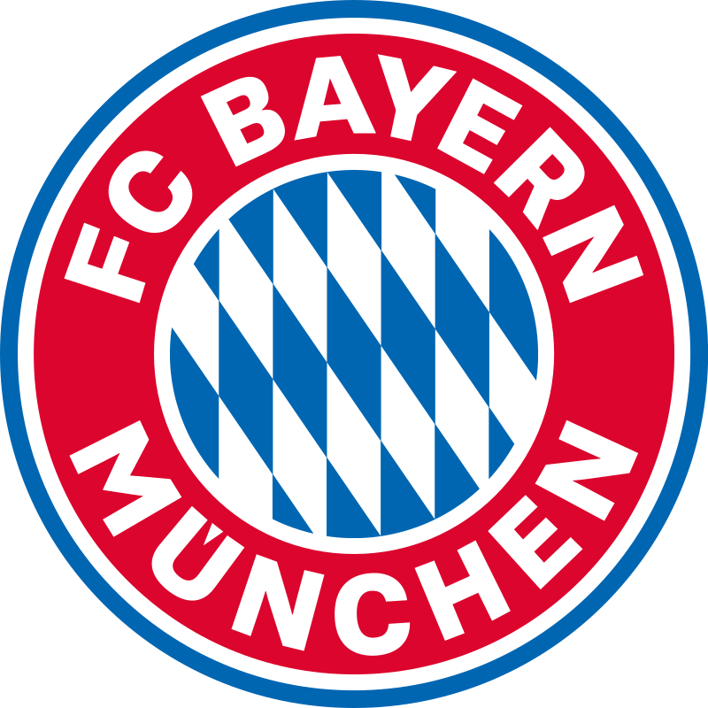
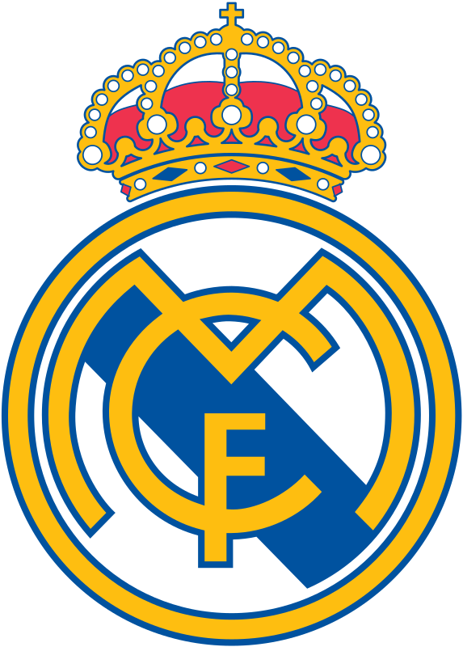
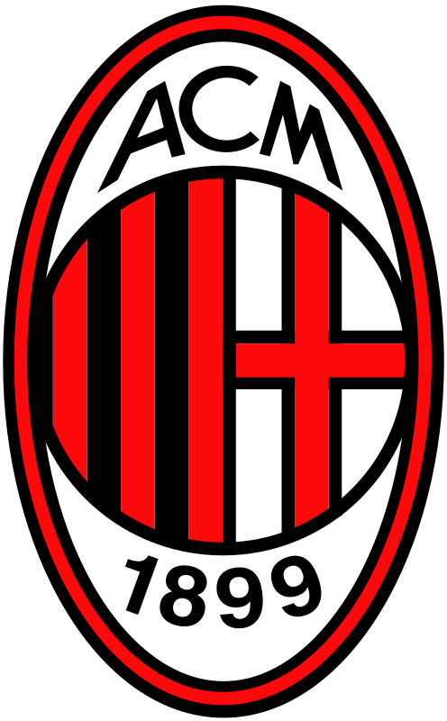
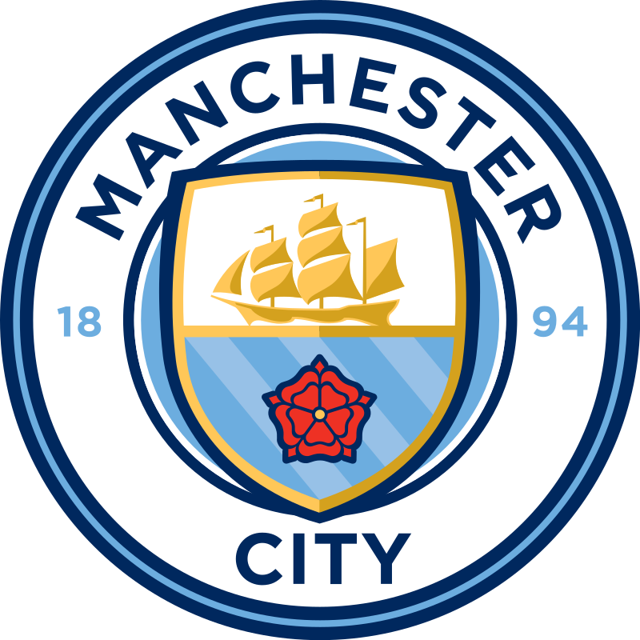
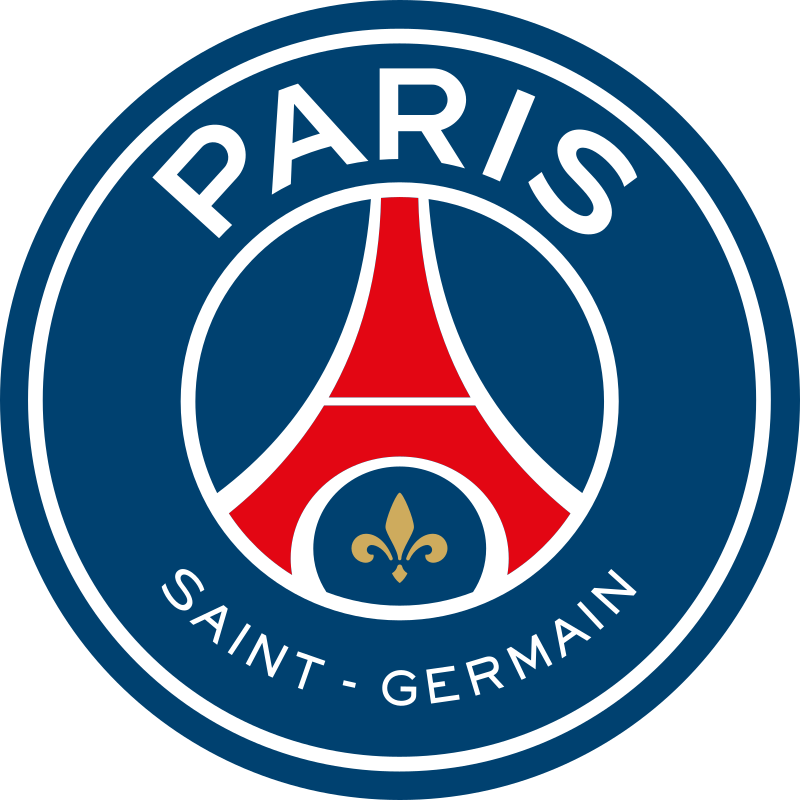
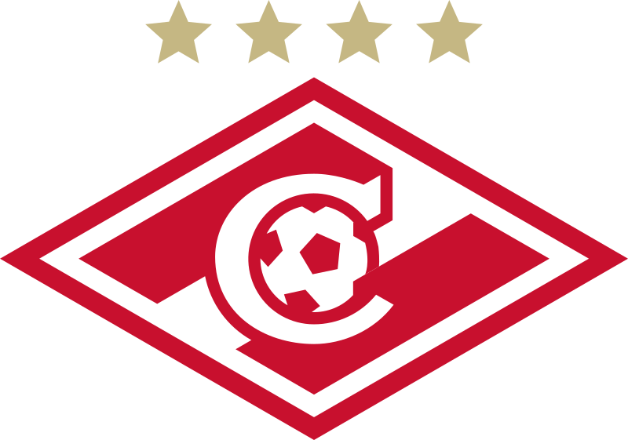

ФК «Бавария»
«Бавария» — профессиональный футбольный клуб из Мюнхена. Является самым титулованным клубом Германии и одной из популярнейших команд мира. В 2013 году «Бавария» стала первым клубом из Германии, который выиграл клубный чемпионат мира.
ФК «Реал Мадрид»
«Реал Мадрид» — легендарный испанский футбольный клуб, признанный ФИФА лучшим клубом XX века. Является одной из самых титулованных команд как в Испании, так и в мире. «Реал» — один из самых дорогих спортивных клубов на планете.
ФК «Милан»
«Милан» — один из величайших клубов в истории. «Милан» является первой итальянской командой, выигравшей Кубок европейских Чемпионов. Клуб занял седьмое место в списке лучших футбольных клубов XX века по версии ФИФА.
ФК «Манчестер Сити»
«Манчестер Сити» — популярный английский футбольный клуб из Манчестера. Команда была создана в 1880 году как «Сент Маркс (Уэст-Гортон)», в 1887 ее переименовали в «Ардуик», и лишь в 1894 году клуб получил название, под которым он известен и в наше время.
ФК «ПСЖ»
ПСЖ — самый богатый, популярный и титулованный клуб Франции. Команда не только уверенно доминирует на внутренней арене, но и весьма успешно выступает в еврокубках. Летом 2017 года ПСЖ потратил огромные деньги на трансферы.
ФК «Спартак» Москва
«Спартак» — самый популярный российский футбольный клуб согласно исследованию «Яндекса», проведенному в 2019 году. На текущий момент команда является самой титулованной в России. За «Спартаком» закрепилось прозвище «народная команда».